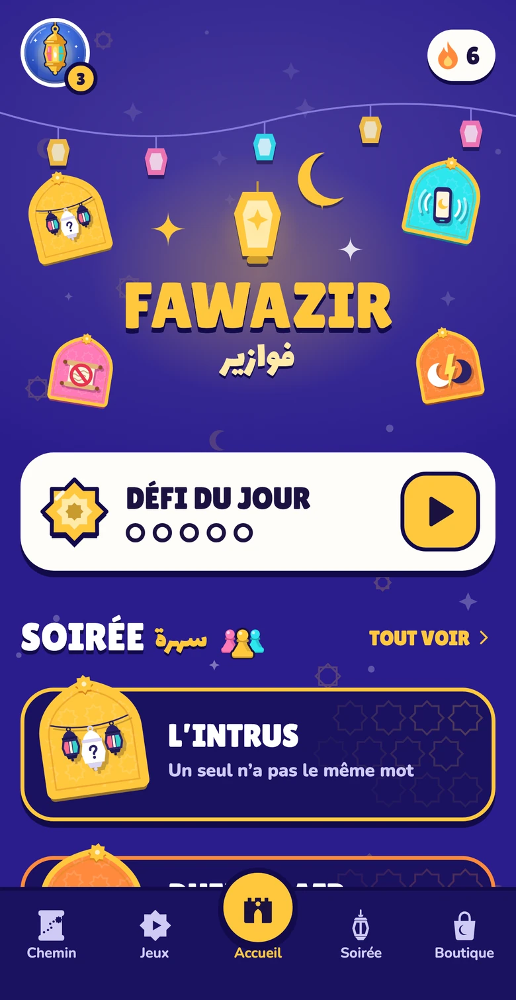
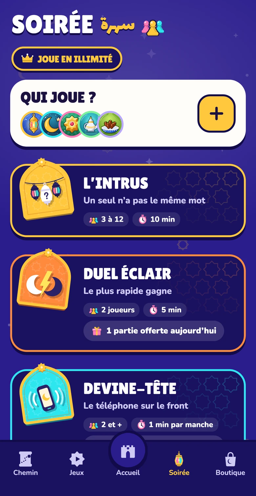
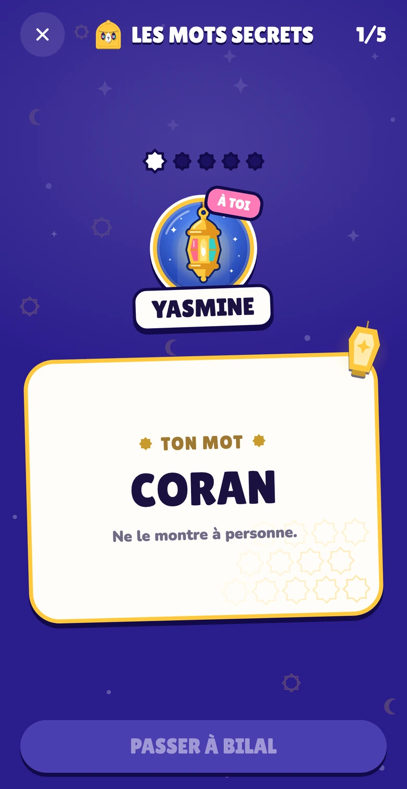
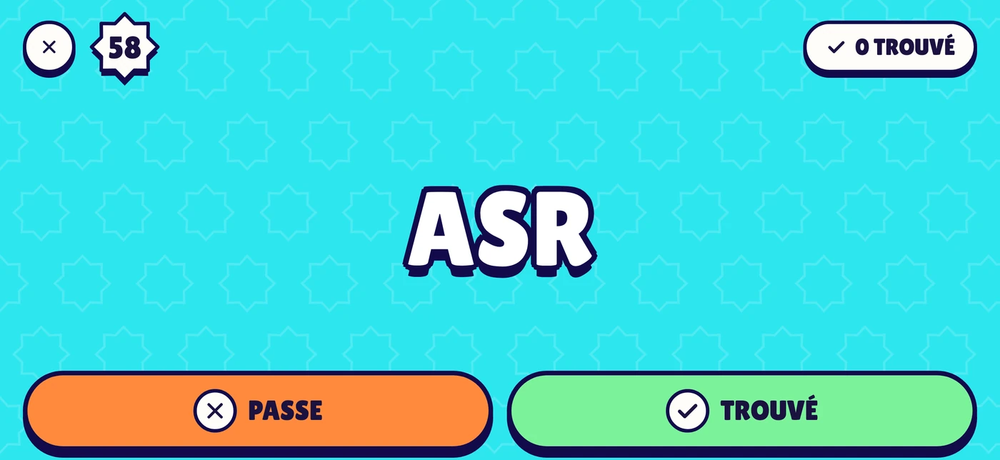
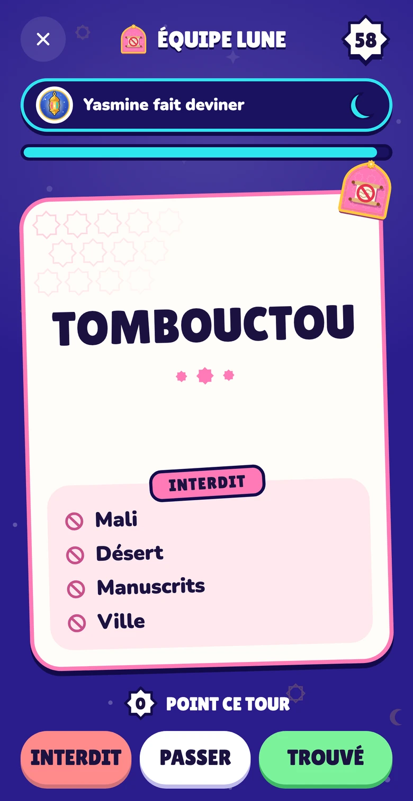
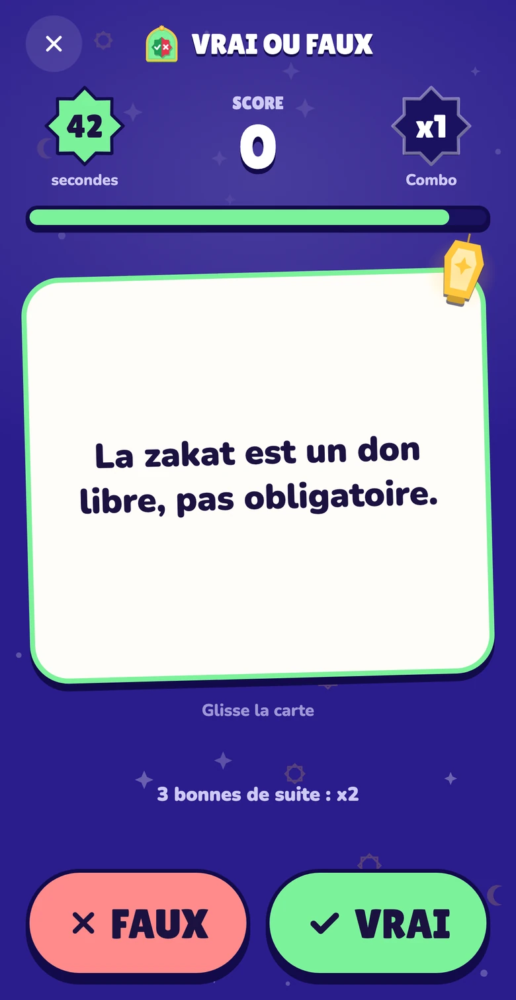
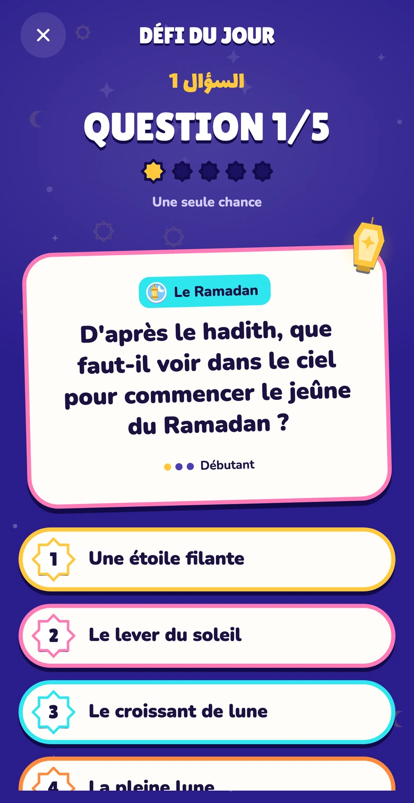
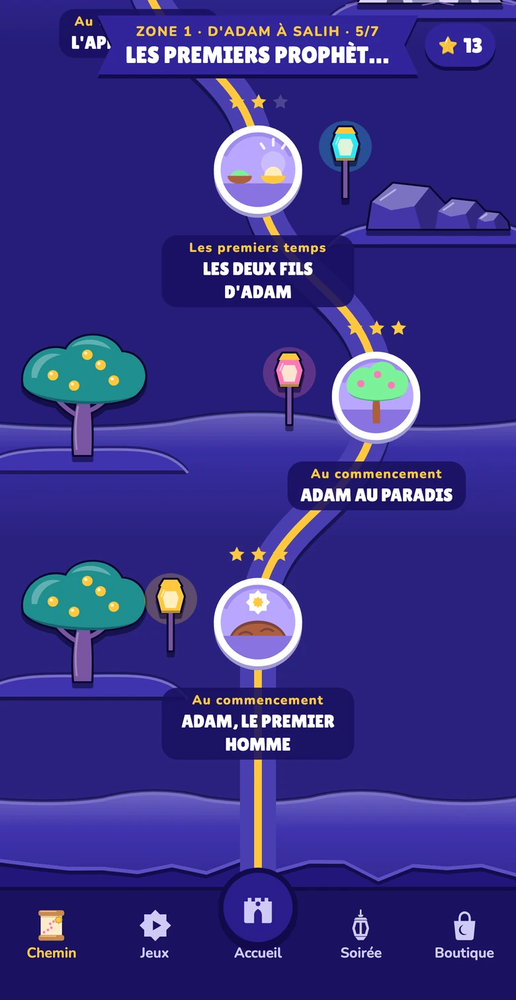

Duel éclair
Face à face sur le même écran : vrai ou faux ? Le plus rapide marque le point.
Quiz islamique en famille et entre amis, à plusieurs sur un seul téléphone. On rit, on apprend, et chaque réponse a sa source.


Pas de compte, pas de connexion : un seul téléphone suffit pour toute la soirée.
Les prénoms de la soirée, chacun avec son avatar. Ils restent pour la prochaine fois.
Un jeu d'ambiance, de rapidité ou de culture, selon l'humeur et le nombre de joueurs.
L'app annonce à qui c'est le tour, garde les scores et désigne le gagnant.
Cinq jeux à jouer ensemble, des cousins aux grands-parents.

Tout le monde reçoit le même mot, sauf l'intrus. Chacun dit un mot à son tour pour le décrire, puis on vote pour démasquer celui qui n'a pas le même.
Avec Le Bluffeur, un joueur n'a aucun mot et doit faire semblant jusqu'au bout.

Le téléphone sur le front, tes amis te font deviner le mot avant la fin du chrono. Penche-le vers le sol quand tu as trouvé, vers le plafond pour passer.

Deux équipes, un chrono. Fais deviner le mot à ton équipe sans jamais prononcer les quatre mots interdits, sinon c'est un point en moins.
Face à face sur le même écran : vrai ou faux ? Le plus rapide marque le point.
Une sourate, un prophète, un lieu… tous avec la même lettre, avant la fin du chrono.
Trois niveaux, de Débutant à Expert, et des thèmes au choix : Coran, prophètes, Ramadan, lieux saints…
45 secondes chrono. Enchaîne les bonnes réponses pour multiplier tes points.
Le mot du jour en 6 essais, puis son sens.
Un personnage, un lieu ou une notion, avec le moins d'indices possible.
Remets les grands événements dans l'ordre.

Cinq questions, une seule chance, les mêmes pour tout le monde. Partage ton score et garde ta série de jours.

L'histoire de l'islam, d'Adam jusqu'au Prophète ﷺ, étape par étape. Chaque étape raconte un moment, puis te pose ses questions.


Fawazir arrive sur iPhone. Une question, une idée de jeu ? Écris-nous à fawazir-contact@gmail.com.